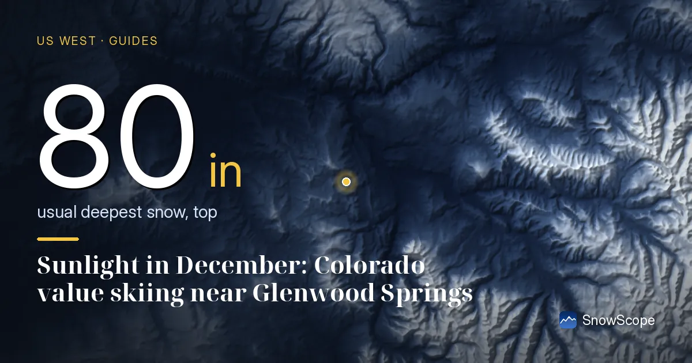

Sunlight in December: Colorado value skiing near Glenwood Springs
Sunlight is the Colorado ski hill people forget while they queue on I-70. It sits above Glenwood Springs, its tickets start at $74, and it is on the Indy Pass. December snow is decent here on our history, but not a sure thing.
See the live snow forecast for Sunlight Mountain Resort in the SnowScope appSnow depth, powder alerts and the 3D map, free.
Away from the crowds
On our mapping Sunlight is small: 3 lifts and about 23 mi (37 km) of runs, from roughly 8,140 ft (2,480 m) to 9,850 ft (3,002 m). Glenwood Springs, with its hot springs, is the town below, which makes a ski day here an easy pairing with an evening soak.

The prices, and a deadline
Single and multi-day tickets start at $74. The better deal is the Sunny 6 Pack: six lift tickets from $349, but the offer ends November 30, 2026, so it has to be bought before the season really starts.
Sunlight is on the Indy Pass list too. The Indy Base Pass is $419 and the Indy+ Pass $469, each giving two days at every member area.

December, week by week
Lasting snow usually reaches mid-mountain, about 8,990 ft (2,741 m), in mid-October. A typical 1 December has 20 in (51 cm) there, 15 December 26 in (67 cm), and Christmas Day 31 in (80 cm).
The share of good-snow weeks at mid-mountain (a weekly mean of 20 in, 50 cm, or more) is 57 % in the first week of December, 61 % in the second, 78 % in the third and 87 % in the week of Christmas. On 15 December, 72 % of winters had 20 in or more at mid-mountain. A lean December left 13 in (34 cm): enough for a few groomers, not the glades.
Sunlight against Ski Cooper, Wolf Creek and Vail
Ski Cooper has almost the same mid-mountain snow, 26 in (66 cm) on a typical 15 December, and a $49 weekday price ($99 on weekends and holidays). Wolf Creek is snowier, 34 in (87 cm), at $96 on regular days and $110 on peak days. Vail had 24 in (62 cm) at mid-mountain on a typical 15 December on our numbers; we did not compare its price.
Sunlight's edge is the 6 Pack for those who decide early, and the short line.
Honesty corner
Early season here has slipped a little: 29 in (74 cm) at mid-mountain on a typical 15 December in the first 15 winters of our record, 25 in (63 cm) in the last 15, and the share above 20 in fell from 80 % to 60 %. Last winter gave 14 in (35 cm) on that date. For a December trip, aim for the week before Christmas.
Tips for skiers
- Decide before November 30 if you want the 6 Pack.
- Aim for 14 to 24 December, before the holidays and after the early-December gamble.
- The road up from Glenwood Springs is narrow and winding: snow tires recommended.
- Combine skiing with the hot springs on the same day: it is a short drive.
References and credits
- Sunlight Mountain Resort, lift tickets (official) sunlightmtn.com/lift-tickets/
- Indy Pass, shop 2026-27 (official) www.indyskipass.com/shop
- Ski Cooper, day pass 2026-27 (official) www.skicooper.com/cooper-day-pass/
- Wolf Creek Ski Area, tickets and passes 2026-2027 (official) wolfcreekski.com/tickets-passes/
- OpenSkiMap (mapped lifts and runs) openskimap.org/
- avalanche.org, US avalanche centers and forecasts avalanche.org/
About these numbers
Snow numbers: SnowScope snow history, 46 past winters (1980-81 to 2025-26) at the base, mid-mountain and top heights given, a reconstruction of past snow for an area corrected for height (ERA5-Land based; Snow_Hydro 1 km for Morocco), not the ski area's own snow reports. Current snow: the SnowScope snow map. Lifts, runs and heights: OpenSkiMap mapping. Prices: the official pages listed below, read on 13 November 2026; dynamic prices change with the date and with demand.
Official avalanche bulletins: Colorado Avalanche Information Center
Cite this report
For research, teaching or the press: the numbers and charts are free to reuse under CC BY 4.0 with this citation.
SnowScope (2026), Sunlight in December: Colorado value skiing near Glenwood Springs, https://snowscope.app/blog/en/2026/11/sunlight-mountain-glenwood-springs-december-value.html, accessed 2026-11-15
SnowScope (Atlas Labs). (2026, November 15). Sunlight in December: Colorado value skiing near Glenwood Springs. SnowScope snow reports. https://snowscope.app/blog/en/2026/11/sunlight-mountain-glenwood-springs-december-value.html
BibTeX
@misc{snowscope2026sunlightmountainglenwood,
author = {{SnowScope (Atlas Labs)}},
title = {Sunlight in December: Colorado value skiing near Glenwood Springs},
year = {2026},
month = nov,
howpublished = {\url{https://snowscope.app/blog/en/2026/11/sunlight-mountain-glenwood-springs-december-value.html}},
note = {Published 2026-11-15 09:34 UTC; accessed 2026-11-15}
}· CC BY 4.0 · Methods, data and tools →
Sunlight Mountain Resort: snow and temperature by height, this winter vs last (tools) →
Follow Sunlight Mountain Resort
Free: a message when fresh snow is coming, and the forecast every morning.
More snow reports

Wolf Creek leads with mid-slope snow at 361% of normal for November 10, well ahead of typical and signaling significant water storage in the mountains.

Getting to Telluride in winter, airport by airport: Telluride Regional, Montrose, the drive on Highway 145 with the Colorado traction law, and the free gondola to Mountain Village.

Fresh snow across the US West has built depths well above normal. At Palisades Tahoe Alpine Meadows, upper slopes hold 75 cm (measured 2026-11-18), compared to 10 cm typical for mid-November.